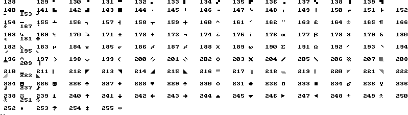
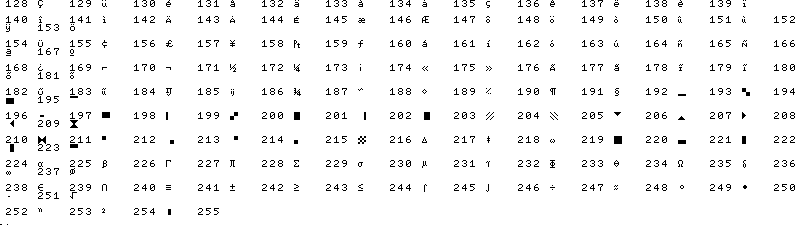
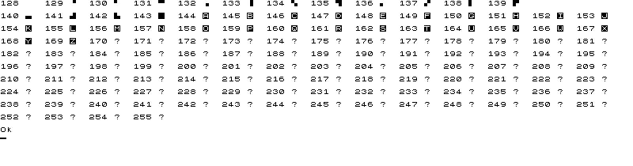

Blassic. Command line options.
Last modified: 13-feb-2005.
"In case it wasn't clear, options are usually optional."
(The tao of option parsing, in Optik documentation).
- -a n1[,n2]
-
Auto number values. n1 is the first line number to be used, n2 the
increment. Stablishes the values for the system vars AutoInit and
AutoInc.
- --allflags
-
Set all compatibility flags to 1. Useful only for testing.
- --appleII
-
Ajust several system vars to Apple II Basic compatibility.
PRINT "A","B" leaves 12 spaces between A and B.
IF (condition) GOTO (line number) gives a "Syntax Horror".
In logical operations, nonzero values are treated as true.
logical operations return 1 if the result is true, zero otherwise.
- --cpc
-
Ajust several system vars to Amstrad CPC Basic compatibility.
PRINT "A","B" leaves 12 spaces between A and B.
IF (condition) GOTO (line number) is a valid instruction.
The characters with ASCII codes > 127 correspond to the
CPC graphical characters in the table below.

- -d
-
Detach from console.
- --debug level
-
Set the debug level to level, the value is asigned to the
DebugLevel system var and is used by the IF_DEBUG instruction.
- -e command
-
Execute command and exit. Must be the last option. You
must take care with the quoting conventions of your shell.
Example in unix whith sh: blassic -e 'print "Hola" '
- --errout
-
Redirect the error output to the standard output.
- --gwbasic
-
Adjust several system vars to GW Basic compatibility.
IF (condition) GOTO (line number) is a valid instruction.
PRINT "A","B" leaves 14 spaces between A and B.
- --info
-
Show additional info in some error conditions.
- --lfcr
-
Convert line feed to carriage return in INKEY$ and GET in text
mode in unix.
- -m mode_number | mode_name | widthxheight
-
Mode. Executes MODE mode_number or MODE "mode_name" or MODE width, height.
- --msx
-
Adjust several system vars to MSX Basic compatibility.
PRINT "A","B" leaves 14 spaces between A and B.
IF (condition) GOTO (line number) is a valid instruction.
The characters with ASCII code >128 are shown in the table below.

- --norun
-
If a program is specified as argument, load it but not run.
- -p list of expressions
-
Print each of the expressions with the PRINT instruction.
- --rotate
-
Rotate 90 degrees all graphics modes. Useful on PDAs. Arrow keys
are also rotated.
- --spectrum
-
Adjust several system vars to Spectrum Basic compatibility.
PRINT "A","B" leaves 15 spaces between A and B.
IF (condition) GOTO (line number) gives a "Syntax Horror".
GO TO (line number) and GO SUB (line number) are valid instuctions.
In logical operations, a nonzero variable is true. Logical operations
return 1 when the result is true, zero otherwise.
The characters with ASCII code >128 are shown in the table below.

- --tron
-
Enter tron mode. Same effect as the TRON instruction without arguments.
- --tronline
-
Entre tron line mode. Same effect as the TRON LINE instruction without
arguments.
- -x keyword
-
Exclude keyword from the list of Blassic keywords. Useful to execute
a program that uses a Blassic keyword as variable name. Can be specified
several times to exclude more keywords.
- --
-
Inside of a list of expressions for the -p option marks the end of the
list. In other case, marks the end of options.
- -
-
Used as program name means read the program form standard input.
That's all folks!